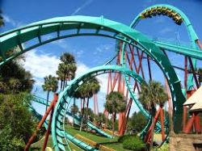
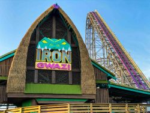
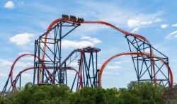
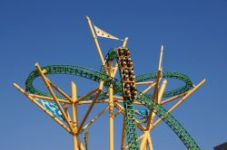
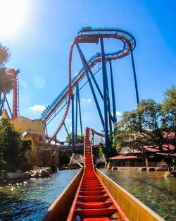

Park Rides & Attractions
Busch Gardens Tampa Bay has plenty of fun and exhilariting rides! The top 5 rides in the park are listed below.

Kumba
This legendary Florida coaster starts with a 135-foot drop followed by a full 3 seconds of weightlessness on one of the world’s largest vertical loops.

Iron Gwazi
Plunge from a 206-foot-tall peak into a 91-degree drop and reach top speeds of 76 miles per hour on this award-winning wood and steel hybrid coaster.

Tigris
Experience looping twists with forward and backward motion, breath-taking drops, a 150-foot skyward surge, and an inverted heartline roll, designed to mimic the awe-inspiring agility of a tiger—the world’s largest and most powerful cat.

Cheetah Hunt
Celebrating the world’s fastest land mammal—the cheetah—this thrilling triple-launch roller coaster is the park’s longest thrill ride attraction, at 4,400 feet!

SheiKra
Climb 200 ft to the edge of a 90° drop and wait to speed over the edge at up to 70mph. Ride this extreme coaster if you dare.